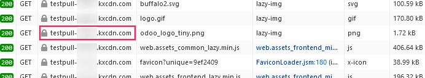

Configurar una red de distribución de contenidos (CDN)¶
Desplegar con KeyCDN¶
Una CDN o red de distribución de contenidos es una red de servidores distribuidos alrededor del mundo que proporciona contenido de internet a una gran velocidad. La CDN otorga contenido a los sitios web de manera rápida y con buena calidad.
En este documento le indicaremos cómo configurar una cuenta KeyCDN en un sitio web con la tecnología de Odoo.
Crear una zona pull en el tablero de KeyCDN¶
En el tablero de KeyCDN primero vaya a (zonas) en el menú de la izquierda. En el formulario, escriba un nombre para la zona en Zone Name (nombre de la zona), este aparecerá como parte de la URL de la CDN. Después, configure el Zone Status (estado de la zona) como active para activar la zona. En Zone Type elija el valor Pull. Por último, en Pull Settings ingrese la URL de origen, que debería ser la URL completa de su base de datos.
Example
Use https://subasededatos.odoo.com y reemplace el dominio subasededatos con el nombre real de su base de datos. También puede usar una URL en lugar del subdominio de Odoo que se le proporcionó a la base de datos.

En General Settings (ajustes generales) después del formulario de la zona, haga clic en el botón Show all settings (mostrar todos los ajustes) para expandir las opciones de la zona, esta debería ser la última opción en la página. Después de expandir el menú General Settings asegúrese de que la opción CORS está activada.
Después, vaya al final de la página de configuración de la zona y guarde los cambios. KeyCDN le indicará que se desplegará la nueva zona, esto puede tomar hasta 10 minutos.

Nota
Se generará una nueva URL de la zona para su zona, en este ejemplo es pulltest-xxxxx.kxcdn.com. El valor dependerá de cada base de datos.
Copie la URL de la zona y péguela en algún lado, ya que la usará más adelante.
Configurar la instancia de Odoo con la nueva zona¶
En la aplicación Sitio web vaya a y active la Red de distribución de contenidos (CDN). Copie y pegue la URL de la zona que almacenó durante el paso anterior en el campo URL base CDN. Solo podrá ver y configurar este campo si el modo de desarrollador está habilitado.
Nota
Asegúrese de que haya dos barras (//) antes y una barra inversa (/) después de la URL base CDN.
Guarde los ajustes cuando termine.

Ahora su sitio web utiliza la CDN para los recursos que coinciden con las expresiones regulares de los filtros CDN.
Para verificar que la integración de la CDN funciona, vaya al HTML de su sitio web de Odoo y revise la URL de las imágenes. Para ver el valor de URL base CDN puede usar la función Inspeccionar de su navegador en el sitio web de Odoo. Busque el registro dentro de la pestaña Red de las herramientas de desarrollador.
Activar el intercambio de recursos de origen cruzado (CORS) para evitar problemas de seguridad¶
Existe una restricción de seguridad en algunos navegadores (como Mozilla Firefox y Google Chrome) que evita que un archivo CSS que se haya vinculado de manera remota recupere recursos relativos en este mismo servidor externo.
Si no activa la opción CORS en la zona CDN, el error más evidente que ocurrirá será que el sitio web estándar de Odoo no tendrá los iconos de Font Awesome, ya que el archivo origen en el CSS de Font Awesome no se podrá cargar desde el servidor remoto.
Cuando ocurren estos errores de origen cruzado, podrá leer un mensaje de error parecido al que aparece a continuación en la consola de desarrollador de su navegador:
La fuente de origen 'http://pulltest-xxxxx.kxcdn.com' no puede cargar /shop:1 debido a la política de intercambio de recursos de origen cruzado: no se encuentra un encabezado 'Access-Control-Allow-Origin' en el recurso solicitado. Por lo tanto, el origen 'http://subasededatos.odoo.com' no tiene permitido el acceso.

Para solucionar este problema active la opción CORS en la CDN.